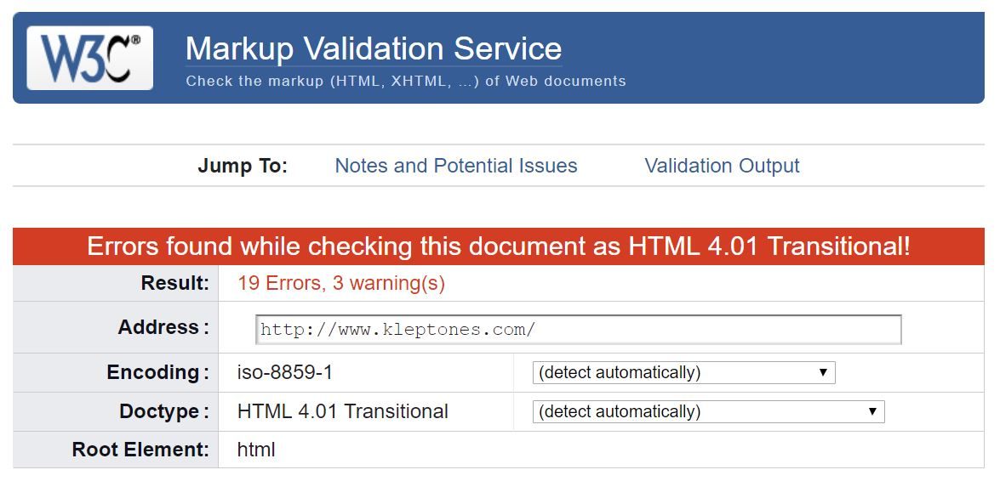
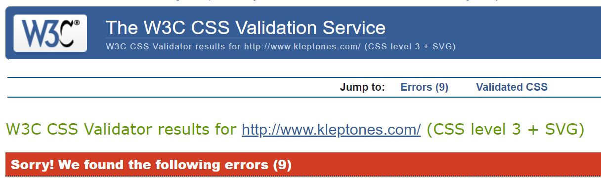
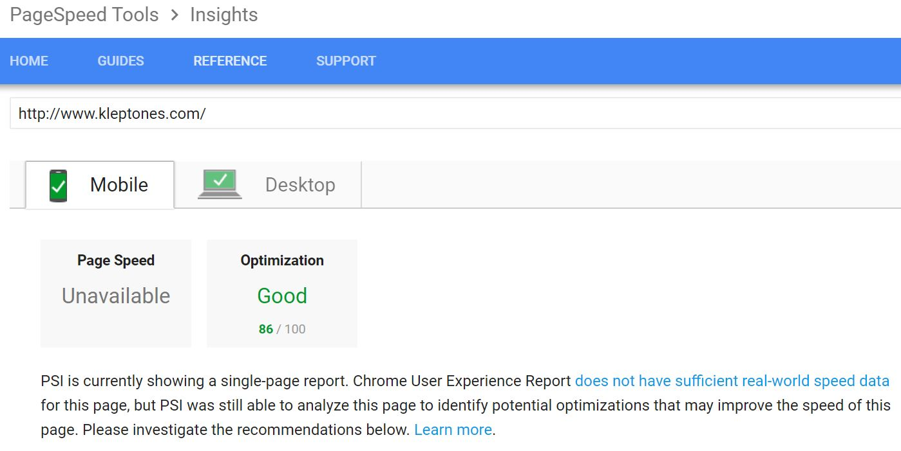
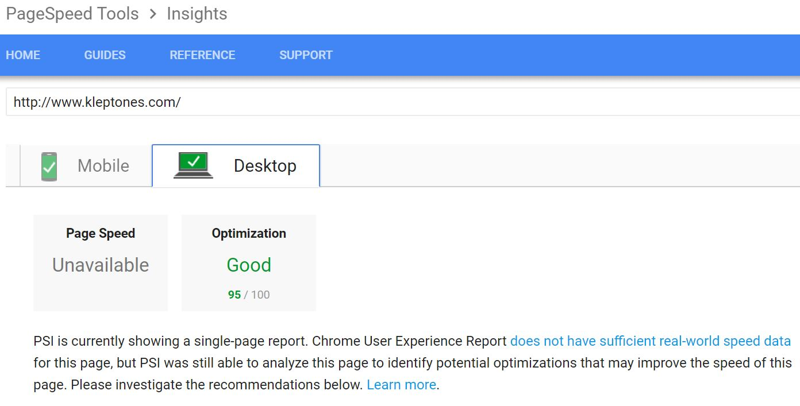

Review of the website Kleptones.com
|
||||
| Assessment Criteria | PASS/FAIL | Screenshot of Results | Fail Details | Personal Thoughts The fact that this is an older page really doesn’t surprise me, but it does kind of disappoint me. The host is a DJ that goes by the pseudonym “Eric Kleptone” – his music is bootleg, or “mash-up,” and, in my humble opinion, the best of the best. So he doesn’t need a website that is visually smashing or overly complex – he needs an outlet to share, for free (because he legally can’t charge money), all of his music. So it makes sense that his site would be super fast, with a minimalist design. At first I hoped this would help the review when it comes to Accessibility. But that only sort of helped. In the end, the tabs run through a sequence that seems fluid and logical – always starting with the Home tab and going along the top Nav – but after the top Nav is traversed, it skips to an invisible object. Some of the time it took me to the Sign Up page, other times it just took me to a 404 error. Once in the content of each Nav division, it seemed to flow really well. The only exception to this was the Blog – which, unexpectedly, opens in a new tab, and while the flow there is impeccable (stopping on each YouTube button or control, and going from every entry from top to bottom in order and missing nothing) the header for the Blog disappears, so the top Nav is suddenly gone. This made it especially hard for me while performing the “straw test,” but even as a regular user I had to stop and register that the page was not just a new one, but a new tab. Often, as an able user, this would be a convenience. After studying our Accessibility chapter, I’m seeing that it’s not. My Suggestions: First and Second - update this to HTML 5. The site is small and easy, it should not take much to make that happen. The CSS is going to likely be the same, or with nominal transformation to update there. Third - nail down the hex codes for the colors being used. Again, it's a high contrast mix of white, red, gray and black. I'm doing the same thing with my design, so that should be an easy fix. Fourth - maybe make the Nav bigger? for people with visual imparement, that's going to be a huge boon, it was for me during the straw test. Fifth - Add headers to the blog posts, so that readers will be able to hit those quickly. The side-bar with the list of dates is tiny, last in the order of selection, and strictly a list of dates - it should break down by keywords instead. Finally, i'd seriously consider a strictly visually impaired version of the site - add that to the list on the top Nav, and get a more immediate connection for listeners. The people coming to this site are not here for the visual art (not knocking it, just saying), they're here for the music. And people with bad or impaired vision would benefit from getting to those sweet tunes as quickly and easily as possible. I can't say much about the speed? It's kind of great, as far as i can tell. |
|---|---|---|---|---|
| Website passes the W3C validator | FAIL |  | 19 Errors, starting with the fact that it's an HMTL 4.01 transitional formatted page? So past the unknown doctype, ther appear to be a lot of missing or maybe outdated Tags getting used? There are also a handful of missing ">" and "<" to close off tags. None of the images have Alt text, either. | |
| Website passes the CSS Validator | FAIL |  | Only 9 errors were found in the CSS, and most of that is, strangely enough, related to bad color numbers? The selectors seem to hit their targets, but the values given are just strings of 6 digits - maybe the author didn't know you had to hashtag HEX value colors? Also note: the CSS is in the page itself, not linked to a style sheet. Not technically a _bad_ thing, just against what we've been taught here. | |
| Website Status using PageSpeed Tool | GOOD! |   |
As expected, this is old, but still works great. It's a decently fast site, especially for such an old piece of work. | |